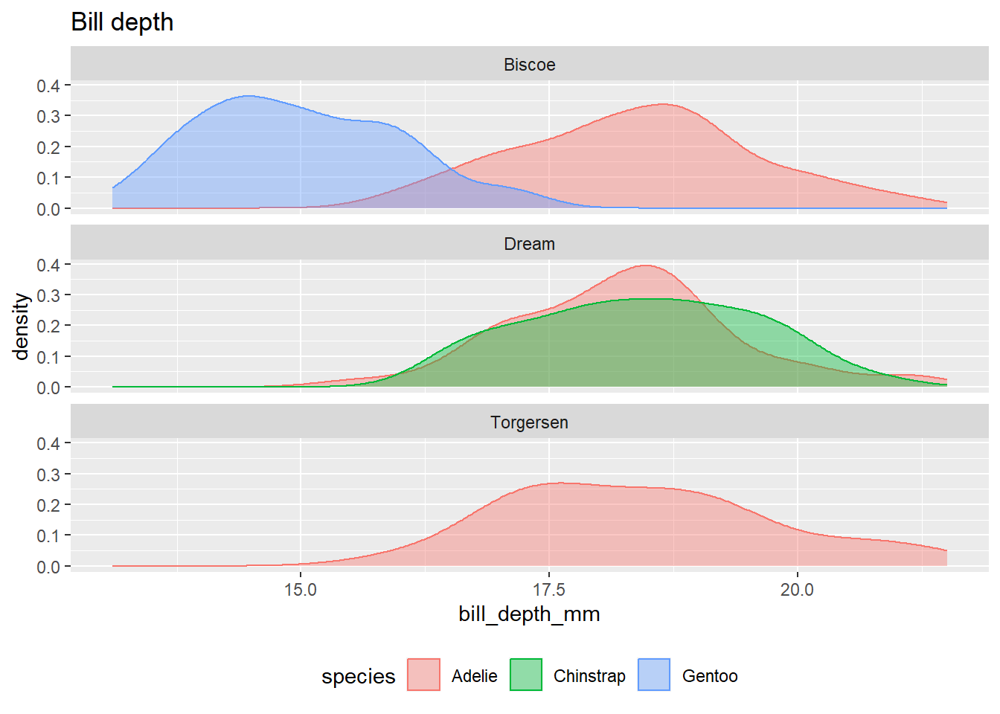
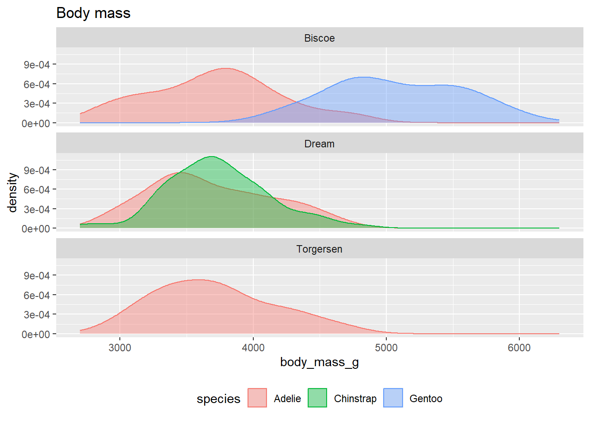

# If necessary, install packages
if(FALSE) {
install.packages("palmerpenguins")
install.packages("dplyr")
install.packages("ggplot2")
}Penguins example
# Load packages
library(palmerpenguins)
library(dplyr)Warning: package 'dplyr' was built under R version 4.3.2
Attaching package: 'dplyr'The following objects are masked from 'package:stats':
filter, lagThe following objects are masked from 'package:base':
intersect, setdiff, setequal, unionlibrary(ggplot2)
data(penguins)# Show the top of the `penguins` data frame
knitr::kable(head(penguins))| species | island | bill_length_mm | bill_depth_mm | flipper_length_mm | body_mass_g | sex | year |
|---|---|---|---|---|---|---|---|
| Adelie | Torgersen | 39.1 | 18.7 | 181 | 3750 | male | 2007 |
| Adelie | Torgersen | 39.5 | 17.4 | 186 | 3800 | female | 2007 |
| Adelie | Torgersen | 40.3 | 18.0 | 195 | 3250 | female | 2007 |
| Adelie | Torgersen | NA | NA | NA | NA | NA | 2007 |
| Adelie | Torgersen | 36.7 | 19.3 | 193 | 3450 | female | 2007 |
| Adelie | Torgersen | 39.3 | 20.6 | 190 | 3650 | male | 2007 |
`summarise()` has grouped output by 'species'. You can override using the
`.groups` argument.knitr::kable(penguins_traits)| species | island | bill_length_mm | bill_depth_mm | flipper_length_mm | body_mass_g |
|---|---|---|---|---|---|
| Adelie | Biscoe | 38.97500 | 18.37045 | 188.7955 | 3709.659 |
| Adelie | Dream | 38.50179 | 18.25179 | 189.7321 | 3688.393 |
| Adelie | Torgersen | 38.95098 | 18.42941 | 191.1961 | 3706.373 |
| Chinstrap | Dream | 48.83382 | 18.42059 | 195.8235 | 3733.088 |
| Gentoo | Biscoe | 47.50488 | 14.98211 | 217.1870 | 5076.016 |
# Quarto challenge: Show these tables in the document and supply table legends.
# Quarto challenge: Hide the code that produces these tables.# Plot density smooths of trait measures per species per island
ggplot(penguins, aes(bill_length_mm, color = species, fill = species)) +
geom_density(alpha = .4) +
facet_wrap(vars(island), ncol = 1) +
theme(legend.position = "bottom") +
ggtitle("Bill length")Warning: Removed 2 rows containing non-finite values (`stat_density()`).
ggplot(penguins, aes(bill_depth_mm, color = species, fill = species)) +
geom_density(alpha = .4) +
facet_wrap(vars(island), ncol = 1) +
theme(legend.position = "bottom") +
ggtitle("Bill depth") #Warning: Removed 2 rows containing non-finite values (`stat_density()`).
ggplot(penguins, aes(flipper_length_mm, color = species, fill = species)) +
geom_density(alpha = .4) +
facet_wrap(vars(island), ncol = 1) +
theme(legend.position = "bottom") +
ggtitle("Flipper length")Warning: Removed 2 rows containing non-finite values (`stat_density()`).
ggplot(penguins, aes(body_mass_g, color = species, fill = species)) +
geom_density(alpha = .4) +
facet_wrap(vars(island), ncol = 1) +
theme(legend.position = "bottom") +
ggtitle("Body mass")Warning: Removed 2 rows containing non-finite values (`stat_density()`).# Quarto challenge: Add figure labels to these plots.
# Quarto challenge: Write a short blurb about these results and reference the figures and tables.
# Quarto challenge: Feature a picture of the penguins.
# Artwork of the penguins (by Allison Horst) available for download here: https://allisonhorst.github.io/palmerpenguins/articles/art.html
# Make sure to attribute Allison!